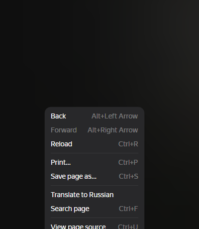
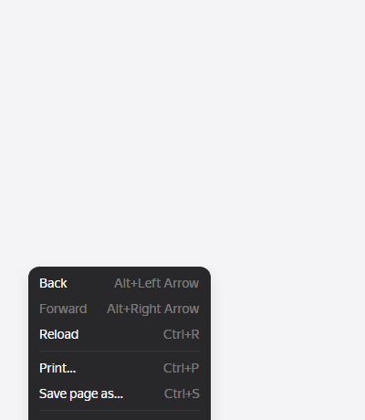
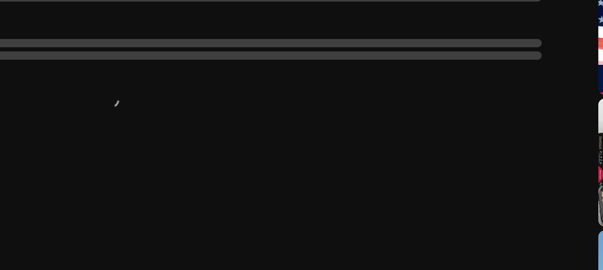
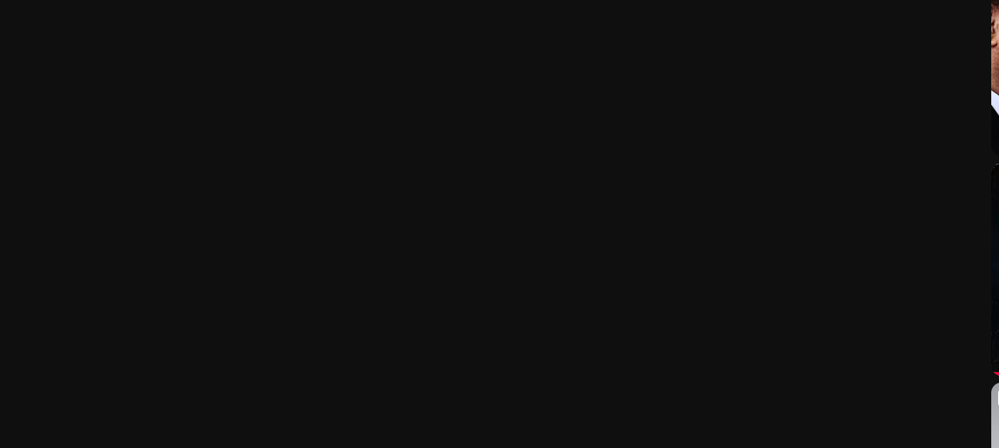

One line, pasted into your browser shortcut. Works for Chrome and Edge on Windows.
Why: streaming sites protect their video, and on Windows Chrome and Edge draw that protected video on a fast layer our warp can't reach — so the picture turns black. The fix: one paste tells your browser to draw it the normal way.
Find the Google ChromeMicrosoft Edge icon on your desktop. Right-click it. If the menu that opens is short, click Show more options first. Then click Properties — the last item.


Find the field that shows a long path ending in …chrome.exe…msedge.exe. Click at the very end of that text, type one space, then press Ctrl + V. Click OK.


Close every ChromeEdge window. Then look at the corner of the screen, next to the clock: if the browser's small icon is still there, right-click it → Exit. Now open the browser again from the same desktop icon.
If you ever want to undo this, do step 2–3 again and delete the pasted line.
Tell us what you see — we read every report and answer personally. A confirmed bug earns you a free month of Pro.
Send a report Contact usProtected (DRM) video is drawn on a special fast layer that runs beside the page; our non-linear warp can't process it, and on some PCs that layer shows black instead. The line switches your browser to its standard drawing path. The video keeps all of its protection and quality; the trade-off is a slightly older rendering route, which can rarely cause minor visual quirks on other sites.
Windows stores the line in the shortcut itself. If you usually open the browser from somewhere else (Start menu, another app), either repeat steps 2–3 on that shortcut, or pin your fixed desktop shortcut to the taskbar and use it from now on.